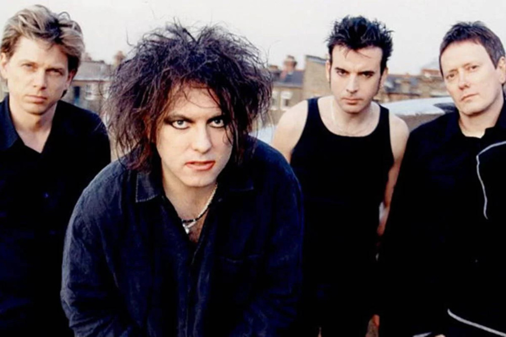
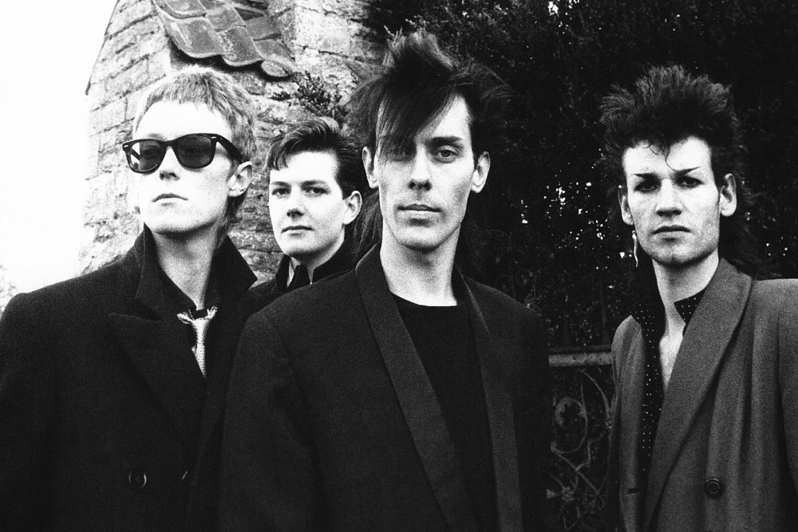

Informações sobre as bandas preferidas em um só lugar.
Índice
The Cure
O The Cure é uma banda formada em 1978 na cidade de Crawley, um subúrbio de Londres localizado no
condado de West Sussex,
na Inglaterra. A banda passou por várias mudanças de formação, com o vocalista, guitarrista e
principal compositor
Robert Smith sendo o membro constante e principal responsável na sua direção musical e criativa.
Iniciaram a sua carreira ainda muito influenciados pelo punk, porém, rapidamente começaram a
desenvolver sons mais
sombrios e densos, assim como letras mais complexas e angustiantes — influenciadas por literatura
existencialista,
niilista, gótica e de fantasia de autores como Sartre, Kafka, Peake, Camus, Farmer entre outros —,
sem cedências,
conseguindo, com essa combinação, a sua imagem de marca e um estatuto de culto que perdura até hoje.

Os integrantes do The Cure
Entre as músicas mais famosas do The Cure estão:
Bauhaus
Bauhaus é uma banda de rock inglesa fundada em 1978 em Northampton, Inglaterra. É composta pelo
guitarrista Daniel Ash,
o baixista David J, o baterista Kevin Haskins que atuaram como trio até formarem quarteto com o
vocalista Peter Murphy.
O nome Bauhaus é uma clara homenagem à escola de arte homônima inaugurada em 1919, perseguida pelos
nazistas e
depois fechada em 1933.

Os integrantes do Bauhaus.
Algumas de suas canções mais famosas:
Siouxsie and the Banshees
Siouxsie and the Banshees foi uma banda de rock inglesa formada em Londres em 1976 por Siouxsie Sioux
(vocalista) e
Steven Severin (baixista).
O grupo foi um dos pioneiros do pós-punk, sua música evoluirá constantemente ao longo de seus vinte anos
de existência.
A banda se separou em 1996.
Siouxsie and the Banshees têm servido como uma influência importante em diversos artistas incluindo Joy
Division,
The Cure, Depeche Mode, The Smiths, Massive Attack, Radiohead, e PJ Harvey. Sid Vicious e Robert Smith
já participaram da banda.